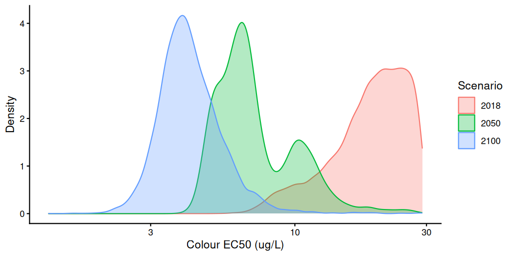

Overview
With bayesnec we have included a function that allows
bootstrapped comparisons of posterior predictions. The main focus here
is to showcase how the user can fit several different bnec
model fits and can compare differences in the posterior predictions
across these fits for individual toxicity estimates (e.g. NEC,
N(S)EC, NSEC or ECx) or across a range of
predictor values. The compare_posterior function was
developed with the intention of comparing model sets based on different
data to assess statistically the difference in either the toxicity
estimates, or across the entire fitted curve, amongst factors of
interest. Examples would include assessing for changes in toxicity
across different WET tests through time, or comparing different levels
of a factor treatment variable (such as climate change scenarios), to
look at how these interact with concentration to impact toxicity.
A factor covariate can be fitted in bayesnec in three
ways, and these answer different questions. A group-level term written
into the formula (ogl(), (par | group) or
pgl()) fits one model to all of the data, treating the
levels as a sample from a population and estimating how far each level
departs from a curve the levels share. Alternatively,
bnec_group() fits each level separately, so that each level
has its own model set and its own functional form and shares nothing
with the other levels. This is the approach required where the levels
are fixed and of interest in themselves. A bnec_group() fit
can also be refitted as a single model using bnec_joint(),
in which each level is fitted with the equation its own model weights
favour (by default) and has its own parameter values, but all levels are
estimated in one posterior. Which designs admit which of these
approaches is set out in the Grouping
and factor covariates vignette.
compare_posterior is the function used to compare
separate fits, whether these come from bnec_group() or from
calls made independently for each level. It pairs the draws of two
posteriors using a random permutation, which approximates their
difference when the posteriors are independent. Separate fits of the
levels by bnec_group() meet that condition. Levels of a fit
with a shared term may be dependent, and permuting their draws would
discard that dependence. For a joint fit, we therefore take a contrast
by differencing its aligned draws. This also applies to the herbicide
refit below, in which the levels have no shared parameters.
Below we demonstrate compare_posterior on two published
datasets that are included in bayesnec, each fitted
separately by level using bnec_group(). In the first, the
levels are seven photosystem II herbicides tested on the coral
Seriatopora hystrix (Jones and Kerswell
2003). In the second, the levels are three climate scenarios
under which the coral Acropora millepora was exposed to one of
those herbicides, diuron (Flores et al.
2021), and the comparison is the one that study was designed to
make. A final section uses the herbicide fits to show how two levels are
compared within a single joint refit.
To run this vignette, we will also need some additional packages
Both concentration series span two or more orders of magnitude, so
each figure is drawn on a log axis. ggbnec_data() and
compare_posterior() return the predictor on the scale it
was recorded on, having already inverted any transformation written
inside crf(), so the axis is set by transforming the scale
and not the values. The helper group_curves() collects the
fitted curve of each level of a bnec_group() fit into one
data frame, so that a single ggplot() call can draw them
together.
log_x <- scale_x_continuous(transform = "log10",
labels = function(x) signif(x, 2))
group_curves <- function(x) {
do.call(rbind, Map(function(f, lev) data.frame(level = lev, ggbnec_data(f)),
x$fits, x$levels))
}Herbicide phytotoxicity to coral
herbicide (Jones and Kerswell
2003) contains the effective quantum yield of photosystem II in
the symbiotic dinoflagellates of the coral Seriatopora hystrix,
measured after a ten-hour exposure to each of seven photosystem II
inhibiting herbicides (https://doi.org/10.3354/meps261149). Three replicate
containers of four corals were held at each concentration. However, the
container is not recorded in herbicide, so no group-level
term can be included for it and the fits below include none.
data(herbicide)
ggplot(herbicide, aes(x = concentration, y = fvfm, colour = herbicide)) +
geom_point(alpha = 0.6) +
facet_wrap(~herbicide, ncol = 2, scales = "free_x") +
log_x +
scale_colour_hue(guide = "none") +
theme_classic() +
theme(panel.spacing.x = unit(1.2, "lines")) +
labs(x = "Concentration (ug/L)", y = "Effective quantum yield")
plot of chunk exmp4-herbicide-raw
Effective quantum yield declines with concentration for all seven herbicides, although the concentration at which it does so differs by about two orders of magnitude among them. For example, yield is at half its lowest-dose mean by 1 µg/L of irgarol and 3 µg/L of diuron or ametryn, against 100 µg/L of tebuthiuron and 300 µg/L of simazine (the highest concentration simazine was tested at).
Separate fits for each herbicide
The seven herbicides are a fixed set chosen for their interest, and
not a sample from a larger population of herbicides. Their functional
forms may differ, and there is no common curve towards which they should
be shrunk, so we fit each herbicide separately using
bnec_group(). We use the "decline" model set,
which is the set used for Figure 11 of Fisher et
al. (2024).
fits_herb <- bnec_group(fvfm ~ crf(log(concentration), "decline"),
data = herbicide, group_var = "herbicide",
family = Beta(link = "identity"),
seed = 228, refresh = 0)Each herbicide is screened separately because each was fitted separately, so an equation that fails for one herbicide is removed from that herbicide without discarding its fits for the other six.
fits_herb <- screen_models(fits_herb, group_action = "per_level")
#> Screening level "ametryn".
#> All 12 candidate models passed the sampler screen (Rhat <= 1.01, ESS >= 400, divergences <= 10).
#> Screening level "atrazine".
#> Dropping 1 of 12 candidate models that failed the sampler screen:
#> - ecxll5: 30 divergent transitions
#> Fitted models are: nec3param nec4param ecxexp ecx4param ecxwb1 ecxwb2 ecxwb1p3 ecxwb2p3 ecxll4 ecxll3 ecxflat
#> The fitted ecxflat curve does not fall to the control's 0.01 quantile within the predictor range for 7920 of 8000 draws. The NSEC summary is censored at 6.91: those draws keep their rank in it and are given no value.
#> Screening level "diuron".
#> All 12 candidate models passed the sampler screen (Rhat <= 1.01, ESS >= 400, divergences <= 10).
#> Screening level "hexazinone".
#> All 11 candidate models passed the sampler screen (Rhat <= 1.01, ESS >= 400, divergences <= 10).
#> Screening level "irgarol".
#> All 12 candidate models passed the sampler screen (Rhat <= 1.01, ESS >= 400, divergences <= 10).
#> Screening level "simazine".
#> Dropping 1 of 12 candidate models that failed the sampler screen:
#> - ecxll5: ESS 163.4, 113 divergent transitions
#> Fitted models are: nec3param nec4param ecxexp ecx4param ecxwb1 ecxwb2 ecxwb1p3 ecxwb2p3 ecxll4 ecxll3 ecxflat
#> The fitted ecxflat curve does not fall to the control's 0.01 quantile within the predictor range for 7920 of 8000 draws. The NSEC summary is censored at 5.7: those draws keep their rank in it and are given no value.
#> Screening level "tebuthiuron".
#> All 12 candidate models passed the sampler screen (Rhat <= 1.01, ESS >= 400, divergences <= 10).The screen removes ecxll5 for atrazine (30 divergent
transitions) and for simazine (113 divergent transitions and an
effective sample size, or ESS, of 163), so each herbicide keeps eleven
or twelve equations of "decline".
summary() on a bayesnecgroupfit prints a
full summary for each level, which for seven herbicides is several
hundred lines. Here we collate only the model weights, to show which
equations each herbicide supports.
herb_wi <- do.call(rbind, Map(function(f, lev) {
w <- summary(f)$mod_weights[, "wi"]
data.frame(herbicide = lev, equation = names(w), wi = as.numeric(w))
}, fits_herb$fits, fits_herb$levels))
# Order the equations by their total weight, so those in use are at the top.
herb_wi$equation <- reorder(factor(herb_wi$equation), herb_wi$wi, sum)
ggplot(herb_wi, aes(x = herbicide, y = equation, fill = wi)) +
geom_tile(colour = "white", linewidth = 0.4) +
geom_text(aes(label = ifelse(wi >= 0.05, sprintf("%.2f", wi), "")),
size = 2.7, colour = "grey15") +
scale_fill_gradient(low = "white", high = "#2c6a5a", name = "weight",
limits = c(0, 1)) +
theme_classic() +
theme(axis.text.x = element_text(angle = 30, hjust = 1),
axis.line = element_blank(), axis.ticks = element_blank()) +
labs(x = NULL, y = NULL)
plot of chunk exmp4-herb-weights
The herbicides differ in which equations describe them. For example,
tebuthiuron puts 0.52 of its weight on ecxwb2p3, which
receives no more than 0.08 for any other herbicide, and hexazinone puts
0.65 on ecxll3, which four of the others weight below 0.05.
Ametryn, hexazinone and irgarol spread their weight over four equations,
and diuron and simazine over five (counting the labelled cells, those of
0.05 or more). No herbicide gives nec3param or
nec4param a weight of 0.05 or more. This suggests that
fitting the levels separately is appropriate here, because the curve
they would be shrunk towards is not one the data agree on.
ggplot(group_curves(fits_herb), aes(x = x_e, colour = level, fill = level)) +
geom_polygon(aes(y = y_ci), colour = NA, alpha = 0.3) +
# Give the line only the rows of the curve; the band's return half has no y_e.
geom_line(data = ~ subset(.x, !is.na(y_e)), aes(y = y_e), linetype = 2) +
geom_point(aes(x = x_r, y = y_r), alpha = 0.6, size = 1.2) +
geom_vline(aes(xintercept = nec_vals), colour = "grey50") +
facet_wrap(~level, ncol = 2, scales = "free_x") +
log_x +
scale_colour_hue(guide = "none") +
scale_fill_hue(guide = "none") +
theme_classic() +
theme(panel.spacing.x = unit(1.2, "lines")) +
labs(x = "Concentration (ug/L)", y = "Effective quantum yield")
plot of chunk exmp4-herbicides
The fitted band follows the observations down for each herbicide, with the N(S)EC (grey lines, the median and 95% credible interval) at or a little before the concentration where the points leave the control level. The N(S)EC is the model-averaged no-effect estimate, based mainly on the NEC where threshold equations receive most of the weight and on the NSEC where smooth equations do. The threshold equations receive almost no weight for any herbicide here, so the N(S)EC of each is in effect an NSEC. The response axis is shared and the concentration axis is not, so the panels are comparable in level but not in position. The seven curves have a similar shape and are located at different concentrations, which suggests that what separates the herbicides is where the curve falls, more than how it falls.
Comparing toxicity estimates across herbicides
compare_posterior takes a bnec_group() fit
directly and compares its levels. Here we compare the N(S)EC across the
herbicides. The posterior draws for each herbicide are returned in
posterior_data, which we summarise first.
cmp_herb <- compare_posterior(fits_herb, comparison = "n(s)ec")
herb_post <- cmp_herb$posterior_data
herb_post |>
group_by(model) |>
summarise(median = median(value), lower = quantile(value, 0.025),
upper = quantile(value, 0.975)) |>
arrange(median)
#> # A tibble: 7 × 4
#> model median lower upper
#> <chr> <dbl> <dbl> <dbl>
#> 1 irgarol 0.134 0.106 0.170
#> 2 diuron 0.151 0.109 0.194
#> 3 ametryn 0.194 0.118 0.634
#> 4 hexazinone 0.624 0.235 1.66
#> 5 atrazine 1.13 0.333 2.49
#> 6 simazine 4.24 0.983 11.4
#> 7 tebuthiuron 10.6 4.42 13.6The N(S)EC estimates span about two orders of magnitude, from irgarol at 0.134 µg/L (0.106–0.170) and diuron at 0.151 (0.109–0.194), through ametryn at 0.194, hexazinone at 0.624 and atrazine at 1.13, to simazine at 4.24 and tebuthiuron at 10.6 (4.42–13.6). These draws can also be plotted as densities.
ggplot(data = herb_post, mapping = aes(x = value)) +
geom_density(mapping = aes(group = model, colour = model, fill = model),
alpha = 0.3) +
log_x +
theme_classic() +
labs(x = "N(S)EC (ug/L)", y = "Density", fill = "Herbicide",
colour = "Herbicide")
plot of chunk exmp4-cmp-herbicides
This is the display shown in Figure 11 of Fisher et al. (2024). Irgarol and diuron, the most potent of the herbicides, overlap substantially: their intervals run from 0.106 to 0.170 and from 0.109 to 0.194 µg/L, so that one is almost inside the other. The posteriors also differ in width as much as in position. For example, the interval for irgarol spans a factor of 1.6 from end to end and that for diuron a factor of 1.8, against 11.6 for simazine and 7.5 for atrazine. Several of the posteriors are bimodal, such as hexazinone, with a second mode near 1.6 µg/L, and simazine, with one near 11. A model-averaged posterior is a mixture, and an equation with little weight that places its threshold elsewhere can appear as a second mode or a long tail, without changing the median.
The probability that the first herbicide of each pair has the higher
N(S)EC is returned in prob_diff, so a value near 0 or 1
separates two herbicides and one near 0.5 does not.
cmp_herb$prob_diff
#> comparison prob prob_lower prob_upper censored_first censored_second
#> 1 ametryn-atrazine 0.019252407 0.019252407 0.019252407 0 0
#> 2 ametryn-diuron 0.837354669 0.837354669 0.837354669 0 0
#> 3 ametryn-hexazinone 0.045380673 0.045380673 0.045380673 0 0
#> 4 ametryn-irgarol 0.922740343 0.922740343 0.922740343 0 0
#> 5 ametryn-simazine 0.010126266 0.010126266 0.010126266 0 0
#> 6 ametryn-tebuthiuron 0.011126391 0.011126391 0.011126391 0 0
#> 7 atrazine-diuron 0.987373422 0.987373422 0.987373422 0 0
#> 8 atrazine-hexazinone 0.838979872 0.838979872 0.838979872 0 0
#> 9 atrazine-irgarol 0.987998500 0.987998500 0.987998500 0 0
#> 10 atrazine-simazine 0.044880610 0.044880610 0.044880610 0 0
#> 11 atrazine-tebuthiuron 0.011751469 0.011751469 0.011751469 0 0
#> 12 diuron-hexazinone 0.014751844 0.014751844 0.014751844 0 0
#> 13 diuron-irgarol 0.731966496 0.731966496 0.731966496 0 0
#> 14 diuron-simazine 0.009501188 0.009501188 0.009501188 0 0
#> 15 diuron-tebuthiuron 0.011251406 0.011251406 0.011251406 0 0
#> 16 hexazinone-irgarol 0.986248281 0.986248281 0.986248281 0 0
#> 17 hexazinone-simazine 0.018127266 0.018127266 0.018127266 0 0
#> 18 hexazinone-tebuthiuron 0.011251406 0.011251406 0.011251406 0 0
#> 19 irgarol-simazine 0.009251156 0.009251156 0.009251156 0 0
#> 20 irgarol-tebuthiuron 0.011251406 0.011251406 0.011251406 0 0
#> 21 simazine-tebuthiuron 0.076509564 0.076509564 0.076509564 0 0Of the 21 pairs, 16 have a probability below 0.05 or above 0.95. For
example, the probability that irgarol has the higher N(S)EC is 0.009
against simazine and 0.011 against tebuthiuron. The least separated pair
is diuron and irgarol at 0.732, the most potent of the set, followed by
ametryn and diuron at 0.837, atrazine and hexazinone at 0.839, ametryn
and irgarol at 0.923, and simazine and tebuthiuron at 0.077.
bnec_group() fits each herbicide separately, so the
independence that the random pairing of compare_posterior
assumes is satisfied here.
The N(S)EC is a no-effect estimate, and it is not what Jones and Kerswell (2003) report. They report
EC50 values (the concentration at which yield is halved), so the
comparison with the source study uses ecx().
ecx(fits_herb, ecx_val = 50)
#> level Q50 Q2.5 Q97.5 bound_Q50 bound_Q2.5 bound_Q97.5
#> 1 ametryn 1.4591758 1.2863149 1.6324673
#> 2 atrazine 39.3445996 34.7377094 44.3024469
#> 3 diuron 2.0418154 1.8998202 2.1894078
#> 4 hexazinone 7.4208606 6.7161146 8.0947159
#> 5 irgarol 0.5399852 0.4873592 0.5958367
#> 6 simazine 124.1203960 112.8038986 136.3685623
#> 7 tebuthiuron 90.3584313 84.5195241 95.2532588Jones and Kerswell (2003) give EC50 values of 0.7 µg/L for irgarol, 1.7 for ametryn, 2.3 for diuron, 8.8 for hexazinone, 45 for atrazine, 150 for simazine and 175 for tebuthiuron. Six of the seven agree closely, with the published value between 13 and 30 per cent above the one here, and both studies rank those six in one order. Tebuthiuron is the exception at roughly half the published value, and it is also the herbicide whose order differs: here it is more toxic than simazine, whereas in the source study it is less so. The published and fitted estimates were derived differently. Jones and Kerswell (2003) interpolated linearly between the tested concentrations (in ToxCalc 5.0), while the values above are a model average over eleven or twelve fitted curves. Linear interpolation across a log-spaced series follows the chord of a curve that is concave over that interval, which places the half-effect concentration higher than a fitted curve would, and this may explain why the published value is higher for all seven herbicides. Nothing in these data indicates which estimate is closer to the truth for tebuthiuron.
Diuron under climate scenarios
coral_colour and coral_pam contain two
endpoints from one experiment, in which fragments of the coral
Acropora millepora were exposed to diuron for 14 days under
three climate scenarios (Flores et al. 2021,
https://doi.org/10.1016/j.marpolbul.2021.112582). The scenarios
are combinations of temperature and dissolved carbon dioxide, labelled
by the year they represent: 28.1 °C at 397 ppm for present-day
conditions (2018), and projections under the high-emissions pathway
RCP8.5 of 29.1 °C at 680 ppm (2050) and 30.2 °C at 858 ppm (2100). Three
replicate chambers were run at each combination of scenario and
concentration, with four coral fragments in each. Jones and Kerswell (2003) found the effect of
diuron on S. hystrix to be inversely related to temperature,
which is the observation Flores et al.
(2021) tested by crossing diuron with warming.
Both endpoints were measured on each fragment. yield in
coral_pam is the effective quantum yield of photosystem II,
the quantity also recorded in herbicide, read by
pulse-amplitude modulated fluorometry. proportion in
coral_colour is a colour index used as a measure of
bleaching, derived from photographs of the fragments and rescaled
between the smallest and largest values observed (see
?coral_colour). Flores et al.
(2021) report that all corals at 9.6 and 29 µg/L had died after
10 to 11 days of exposure, so the colour readings at 29 µg/L are of
fragments that had bleached completely.
Flores et al. (2021) compared EC50
values between the scenarios using bayesnec, and found that
the colour index EC50 was lower under both future scenarios than under
present-day conditions, with probabilities of 0.956 (2050) and 0.970
(2100). For yield the corresponding probabilities were 0.615 and 0.539,
so the scenarios were not separated.
The control on a log axis
Both endpoints include an untreated control recorded as a
concentration of 0, which has no position on a log axis, and
bnec() refuses crf(log(diuron)) because the
logarithm of 0 is not finite. We therefore substitute 0.1 µg/L for the
control. The treatments form a half-log dilution series (0.29, 0.96,
2.9, 9.6 and 29 µg/L, each step about 3.16 times the last), and 0.1 is
one further step below the lowest treatment, rounded. The substitution
is made here and not in the shipped data, and an estimate returned near
0.1 µg/L would describe the substitution and not diuron.
Separate fits for each scenario
The three scenarios are fixed levels of interest, so each is fitted
separately using bnec_group(). Each chamber was held at one
concentration and contained several fragments, so the fragments within a
chamber are not independent observations, and we include a group-level
term on chamber (ogl(chamber)) to allow for this. The Grouping
and factor covariates vignette describes what a term of this kind
estimates where each of its levels is observed at a single
concentration, and the model weights of a set fitted with it leave out
each chamber whole (see the loo_controls argument of
bnec()).
The colour design has five concentrations and none between 2.9 and 29
µg/L, which appears to be too few to estimate both asymptotes of an
equation with four curve parameters reliably. We therefore restrict the
model set to four equations with three curve parameters
(nec3param, ecxll3, ecxwb1p3 and
ecxwb2p3), and use this set for yield as well, so that the
endpoints are compared on one set of equations.
fits_colour <- bnec_group(
proportion ~ crf(log(diuron_adj),
c("nec3param", "ecxll3", "ecxwb1p3", "ecxwb2p3")) +
ogl(chamber),
data = coral_colour, group_var = "climate",
family = Beta(link = "identity"), seed = 228, refresh = 0)
fits_yield <- bnec_group(
yield ~ crf(log(diuron_adj),
c("nec3param", "ecxll3", "ecxwb1p3", "ecxwb2p3")) +
ogl(chamber),
data = coral_pam, group_var = "climate",
family = Beta(link = "identity"), seed = 228, refresh = 0)
fits_colour <- screen_models(fits_colour, group_action = "per_level")
#> Screening level "2018".
#> Dropping 1 of 4 candidate models that failed the sampler screen:
#> - ecxwb2p3: 52 divergent transitions
#> Fitted models are: nec3param ecxll3 ecxwb1p3
#> Screening level "2050".
#> Dropping 1 of 4 candidate models that failed the sampler screen:
#> - ecxll3: ESS 387.5
#> Fitted models are: nec3param ecxwb1p3 ecxwb2p3
#> The leave-one-group-out score has Pareto k above 0.7 for 1 of 15 levels of chamber in ecxwb2p3 (weight 0.51). The scores of those levels are approximate; loo_controls = list(refit = TRUE) replaces them by refitting the equation without each level.
#> Screening level "2100".
#> All 4 candidate models passed the sampler screen (Rhat <= 1.01, ESS >= 400, divergences <= 10).
fits_yield <- screen_models(fits_yield, group_action = "per_level")
#> Screening level "2018".
#> All 4 candidate models passed the sampler screen (Rhat <= 1.01, ESS >= 400, divergences <= 10).
#> Screening level "2050".
#> Dropping 1 of 4 candidate models that failed the sampler screen:
#> - nec3param: ESS 185.1
#> Fitted models are: ecxll3 ecxwb1p3 ecxwb2p3
#> The leave-one-group-out score has Pareto k above 0.7 for 1 of 18 levels of chamber in ecxll3 (weight 0.97); 1 of 18 levels of chamber in ecxwb2p3 (weight 0.03). The scores of those levels are approximate; loo_controls = list(refit = TRUE) replaces them by refitting the equation without each level.
#> Screening level "2100".
#> All 4 candidate models passed the sampler screen (Rhat <= 1.01, ESS >= 400, divergences <= 10).The screen removes one equation from three of the six level fits:
ecxwb2p3 from the 2018 colour fit (52 divergent
transitions), ecxll3 from the 2050 colour fit (an ESS of
388) and nec3param from the 2050 yield fit (an ESS of 185).
For the 2050 fits of both endpoints, the leave-one-group-out score also
has a Pareto k above 0.7 for one chamber in some equations
(ecxwb2p3 for colour, and ecxll3 and
ecxwb2p3 for yield), so the contribution of that chamber to
the model weights is approximate.
loo_controls = list(refit = TRUE) would replace it by
refitting each equation without the chamber, which we have not done
here.
rbind(data.frame(endpoint = "colour (proportion)", group_curves(fits_colour)),
data.frame(endpoint = "yield", group_curves(fits_yield))) |>
ggplot(aes(x = x_e, colour = level, fill = level)) +
geom_polygon(aes(y = y_ci), colour = NA, alpha = 0.2) +
# Give the line only the rows of the curve; the band's return half has no y_e.
geom_line(data = ~ subset(.x, !is.na(y_e)), aes(y = y_e)) +
geom_point(aes(x = x_r, y = y_r), alpha = 0.4, size = 1) +
facet_wrap(~endpoint, scales = "free_y") +
log_x +
theme_classic() +
theme(legend.position = "bottom") +
labs(x = "Diuron (ug/L), control at 0.1", y = "Response",
colour = "Scenario", fill = "Scenario")
plot of chunk exmp4-coral-fits
The scenarios appear to separate in colour and barely at all in yield. For example, mean colour at 2.9 µg/L is 0.728, 0.611 and 0.456 from 2018 to 2100, whereas mean yield differs by less than 0.015 between scenarios at each concentration below 9.6 µg/L. The fitted band for yield under the 2100 scenario is also wider than the others, from the control to about 2 µg/L.
Comparing toxicity estimates across scenarios
We first compare the colour EC50 across the scenarios, because this is the estimate Flores et al. (2021) compared.
cmp_colour <- compare_posterior(fits_colour, comparison = "ecx", ecx_val = 50)
cmp_colour$prob_diff
#> comparison prob prob_lower prob_upper censored_first censored_second
#> 1 2018-2050 0.961875 0.961875 0.961875 0 0.000000
#> 2 2018-2100 0.997250 0.997250 0.997250 0 0.000125
#> 3 2050-2100 0.922000 0.922000 0.922000 0 0.000125
ggplot(data = cmp_colour$posterior_data, mapping = aes(x = value)) +
geom_density(mapping = aes(group = model, colour = model, fill = model),
alpha = 0.3) +
log_x +
theme_classic() +
labs(x = "Colour EC50 (ug/L)", y = "Density", fill = "Scenario",
colour = "Scenario")
plot of chunk exmp4-cmp-colour
The probability that the 2018 EC50 is the higher is 0.962 against the
2050 scenario and 0.997 against the 2100 scenario, which is similar to
the probabilities of 0.956 and 0.970 that Flores
et al. (2021) report. However, the EC50 values themselves differ
from theirs. The posterior for 2100 is centred near 4 µg/L and that for
2050 near 6 µg/L (with a second mode near 10), whereas the posterior for
2018 is spread from about 8 µg/L to 29 µg/L, the highest concentration
tested. Flores et al. (2021) report EC50
values of 6.05, 4.99 and 4.86 µg/L, measured for each scenario against
one reference response (halfway between the mean 2018 control and the
mean 2100 response at 29 µg/L), whereas ecx() measures each
scenario against its own control. The width of the 2018 posterior
probably reflects the colour design, which has no concentration between
2.9 and 29 µg/L at which to locate the 2018 decline.
This comparison can be made for any estimate that
compare_posterior accepts. Here we tabulate the
probabilities for the EC50, the EC10 and the N(S)EC, for both
endpoints.
scenario_probs <- function(fit) {
prob <- function(...) compare_posterior(fit, ...)$prob_diff
ec50 <- prob(comparison = "ecx", ecx_val = 50)
data.frame(comparison = ec50$comparison,
EC50 = ec50$prob,
EC10 = prob(comparison = "ecx", ecx_val = 10)$prob,
"N(S)EC" = prob(comparison = "n(s)ec")$prob,
check.names = FALSE)
}
rbind(data.frame(endpoint = "colour", scenario_probs(fits_colour),
check.names = FALSE),
data.frame(endpoint = "yield", scenario_probs(fits_yield),
check.names = FALSE))
#> endpoint comparison EC50 EC10 N(S)EC
#> 1 colour 2018-2050 0.961875 0.963875 0.953750
#> 2 colour 2018-2100 0.997250 0.994875 0.985875
#> 3 colour 2050-2100 0.922000 0.945500 0.890500
#> 4 yield 2018-2050 0.402125 0.272125 0.271625
#> 5 yield 2018-2100 0.631125 0.223625 0.082375
#> 6 yield 2050-2100 0.689875 0.305875 0.084250For colour, the 2018 scenario has the higher estimate against both future scenarios with a probability above 0.95, whichever of the three estimates is used. For yield, no estimate gives a probability below 0.05 or above 0.95, and the probabilities for the EC50 and the EC10 range from 0.22 to 0.69, which is consistent with the probabilities of 0.615 and 0.539 that Flores et al. (2021) report for the yield EC50. The yield N(S)EC under the 2100 scenario is higher than under the other two scenarios, with a probability of 0.92 against each, which is in the opposite direction to an effect of warming. This may reflect the less precisely estimated control under the 2100 scenario (the wider band in the figure above), because the NSEC is measured from a lower quantile of the control response, and should not be read as an effect of climate from these data.
Comparing the fitted curves
The user can also compare the posterior fitted values across the full
range of concentrations, using comparison = "fitted". We
increase resolution from its default of 50, because the
concentrations at which predictions are made are evenly spaced on the
recorded scale, and the lower half of a log axis would otherwise contain
only a few of them.
cmp_colour_fit <- compare_posterior(fits_colour, comparison = "fitted",
resolution = 200)
head(cmp_colour_fit$posterior_data)
#> model x Estimate Q2.5 Q97.5
#> 1 2018 0.1000000 0.7285043 0.6922875 0.7664554
#> 2 2018 0.2452261 0.7283892 0.6922071 0.7657922
#> 3 2018 0.3904523 0.7282519 0.6922044 0.7653569
#> 4 2018 0.5356784 0.7280907 0.6921380 0.7643305
#> 5 2018 0.6809045 0.7278394 0.6919410 0.7640378
#> 6 2018 0.8261307 0.7275729 0.6917574 0.7635209In the case of comparison = "fitted" the elements
returned by compare_posterior are data frames, with summary
values of the posterior, of the differences and of the probabilities for
each value of the predictor, for each scenario or pair of scenarios.
ggplot(data = cmp_colour_fit$posterior_data) +
geom_ribbon(mapping = aes(x = x, ymin = Q2.5, ymax = Q97.5, fill = model),
alpha = 0.3) +
geom_line(mapping = aes(x = x, y = Estimate, colour = model),
linewidth = 0.5) +
log_x +
theme_classic() +
labs(x = "Diuron (ug/L), control at 0.1", y = "Colour (proportion)",
colour = "Scenario", fill = "Scenario")
plot of chunk exmp4-colour-fitted
ggplot(data = cmp_colour_fit$prob_diff) +
geom_hline(yintercept = 0.5, colour = "grey70", linetype = 2) +
geom_line(mapping = aes(x = x, y = prob, colour = comparison),
linewidth = 0.5) +
log_x +
theme_classic() +
labs(x = "Diuron (ug/L), control at 0.1",
y = "Probability first is higher", colour = "Comparison")
plot of chunk exmp4-colour-prob
The fitted curves for the three scenarios start at a similar colour (about 0.72 to 0.73 at the control), and the 2100 curve declines first, below 1 µg/L, followed by the 2050 curve near 2 µg/L and the 2018 curve near 10 µg/L. The band for 2018 is wide above 3 µg/L, again reflecting the absence of observations between 2.9 and 29 µg/L. The probability that the 2018 curve is the higher exceeds 0.9 against the 2100 curve from about 0.7 µg/L and against the 2050 curve from about 2 µg/L. Above about 1.5 µg/L, the comparison with 2100 remains above 0.95, while the comparison with 2050 dips to about 0.94 near 10 µg/L. The 2050 and 2100 curves are most clearly separated near 3 µg/L (a probability of about 0.99), and less so near 10 µg/L (about 0.86). This suggests that the scenarios differ over most of the range above about 1 µg/L, which is where the colour response declines under at least one scenario.
Contrasts from a joint refit
The comparisons above treat the levels as separate fits.
bnec_joint() instead takes the per-level fits of a
bnec_group() call and builds one model that includes all
levels, each level keeping the equation its own weights favour and its
own copy of that equation’s parameters. A difference between two levels
is then a difference between coefficients of one fit, taken draw by
draw, and it needs no permutation.
No equation is named in the call. The equation for each level is read
from the weights the bnec_group() fit already computed, so
the refit is of what each herbicide separately favoured, and not of one
form imposed on all seven. The call comes after
screen_models(), so it refits the equations each herbicide
retained after screening.
herb_joint <- bnec_joint(fits_herb, seed = 228, refresh = 0)
herb_joint
#> Object of class bayesnecjointfit
#>
#> equations : ametryn = ecx4param, atrazine = ecxwb1, diuron = ecxll5, hexazinone = ecxll3, irgarol = ecx4param, simazine = ecxll3, tebuthiuron = ecxwb2p3
#> grouping variable : herbicide
#> levels : ametryn, atrazine, diuron, hexazinone, irgarol, simazine, tebuthiuron
#> family : beta (link = identity)
#> dispersion : per level
#> weight at level : ametryn 0.31, atrazine 0.628, diuron 0.331, hexazinone 0.653, irgarol 0.266, simazine 0.369, tebuthiuron 0.524
#> fitted by : bayesnec 2.1.3.44, installed from a local source, which records no commit, under R 4.6.1
#>
#> Each level has its own equation and its own curve parameters in
#> one posterior; read them from the draws as
#> b_<parameter><level tag>_Intercept, the tags being ametryn = ametrynLv1, atrazine = atrazineLv2, diuron = diuronLv3, hexazinone = hexazinoneLv4, irgarol = irgarolLv5, simazine = simazineLv6, tebuthiuron = tebuthiuronLv7.
#> ecx(), nsec() and nec() return one row per level, and autoplot()
#> draws one panel per level.Five different equations are used across the seven herbicides:
ecx4param for ametryn and irgarol, ecxwb1 for
atrazine, ecxll5 for diuron, ecxll3 for
hexazinone and simazine, and ecxwb2p3 for tebuthiuron. The
weight each chosen equation received for its own herbicide ranges from
0.266 for irgarol to 0.653 for hexazinone, and is below 0.4 for four of
the seven, which suggests that most of the herbicides are not well
described by a single form.
Each estimate from a joint refit is returned per level, one row each,
as for a bnec_group() fit.
ecx(herb_joint, ecx_val = 50)
#> level Q50 Q2.5 Q97.5 bound_Q50 bound_Q2.5 bound_Q97.5
#> 1 ametryn 1.4605707 1.2899305 1.629602
#> 2 atrazine 40.0797815 35.9054921 44.793770
#> 3 diuron 2.0623333 1.9374383 2.199501
#> 4 hexazinone 7.4538850 6.8542001 8.096523
#> 5 irgarol 0.5366745 0.4890598 0.591555
#> 6 simazine 126.5668348 117.2100626 136.350713
#> 7 tebuthiuron 90.8803725 86.7826173 95.188208The contrast is then taken on the draws.
posterior = TRUE returns the per-level draws as a named
list, and because they come from one fit they are already aligned: draw
i of one level and draw i of another were taken
together, at one step of one chain.
herb_draws <- ecx(herb_joint, ecx_val = 50, posterior = TRUE)
diuron_irgarol <- herb_draws[["diuron"]] - herb_draws[["irgarol"]]
c(prob_diuron_higher = mean(diuron_irgarol > 0),
median_difference = median(diuron_irgarol),
quantile(diuron_irgarol, c(0.025, 0.975)))
#> prob_diuron_higher median_difference 2.5% 97.5%
#> 1.000000 1.525176 1.389121 1.672942The diuron EC50 exceeds that of irgarol in every draw, by 1.53 µg/L
(1.39 to 1.67). A contrast can also be made on the N(S)EC, the estimate
compared with compare_posterior above.
herb_ne_draws <- nsec(herb_joint, posterior = TRUE)
diuron_irgarol_ne <- herb_ne_draws[["diuron"]] - herb_ne_draws[["irgarol"]]
c(prob_diuron_higher = mean(diuron_irgarol_ne > 0),
median_difference = median(diuron_irgarol_ne),
quantile(diuron_irgarol_ne, c(0.025, 0.975)))
#> prob_diuron_higher median_difference 2.5% 97.5%
#> 0.617000000 0.006362871 -0.038150811 0.049047814On the N(S)EC the probability that diuron has the higher estimate is
0.617, with a median difference of 0.006 µg/L (-0.038 to 0.049), against
0.732 from compare_posterior. The joint refit and
compare_posterior agree in direction, and do not separate
this pair on the N(S)EC. An ECx is a fixed decline from the control of
each level and is located where the curve is steep, whereas the N(S)EC
is a departure from a band around the control, and where the curve is
nearly flat, a small change in where that band ends produces a large
change in the concentration at which the curve crosses it.
The joint refit estimates five functional forms and a separate dispersion for each of seven herbicides, so we check its sampling.
np <- brms::nuts_params(herb_joint$fit)
s_joint <- summary(herb_joint$fit)
pars <- rbind(s_joint$fixed, s_joint$spec_pars)
c(divergent = sum(np$Value[np$Parameter == "divergent__"]),
post_warmup_draws = sum(np$Parameter == "divergent__"),
max_rhat = max(pars$Rhat), min_bulk_ess = min(pars$Bulk_ESS))
#> divergent post_warmup_draws max_rhat min_bulk_ess
#> 0.000000 8000.000000 1.001749 2148.367079There were no divergent transitions in 8000 post-warmup draws, with a maximum R-hat of 1.002 and a minimum bulk effective sample size of 2148.
A joint refit conditions on one equation per level, so the model uncertainty that the per-level averages represent is absent from it. A narrower interval after selecting one equation does not by itself show a gain in precision: it omits uncertainty over the other equations. The chosen equation receives less than 0.4 of the weight for four of the seven herbicides. For irgarol, whose equation received 0.266 of the weight, the EC50 interval is 0.489 to 0.592 µg/L in the joint refit, against 0.487 to 0.596 from the per-level model average. The narrowing is small on these data.
compare_posterior and a joint refit therefore answer
different questions. compare_posterior asks how two
independently estimated levels compare, each with its own model
uncertainty, which is appropriate where the levels were tested
separately and are being ranked. The joint refit asks how two levels
compare conditional on the selected equation for each. In this example
each herbicide has its own curve and dispersion parameters; the fitted
model shares no parameter between them. The aligned draws give a
contrast under that model. A joint refit can also include a shared term
where the levels use one equation, for example in a controlled
comparison of treatments or sites.
Provenance
The fits shown were made when this vignette was precompiled, so the
estimates are those of the package version it ships with. No call names
iter, warmup or control, so the
defaults of bnec() apply (4 chains of 10000 iterations with
8000 warmup), under seed = 228.
compare_posterior pairs the draws under its own
seed argument, so its results do not depend on the
session’s random number stream.
packageVersion("bayesnec")
#> [1] '2.1.3.44'
packageVersion("brms")
#> [1] '2.23.0'
R.version.string
#> [1] "R version 4.6.1 (2026-06-24)"herbicide was built from the data of Jones and Kerswell (2003) by
data-raw/herbicide_data.R, and coral_colour
and coral_pam from the records behind Flores et al. (2021) by
data-raw/coral_diuron.R. The source records for the coral
data are not distributed with the package, although the scripts are, and
the manual pages state what was derived and how.